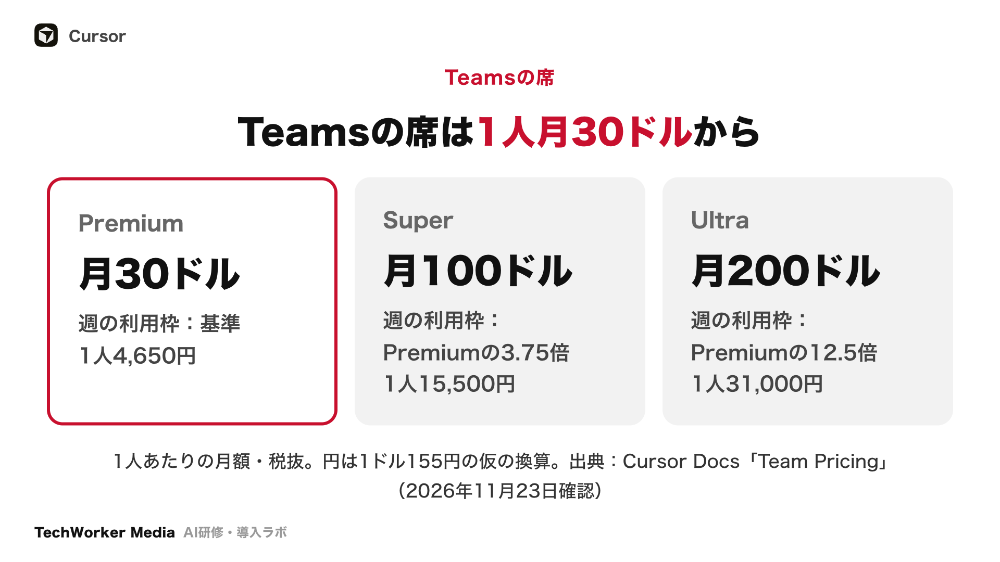
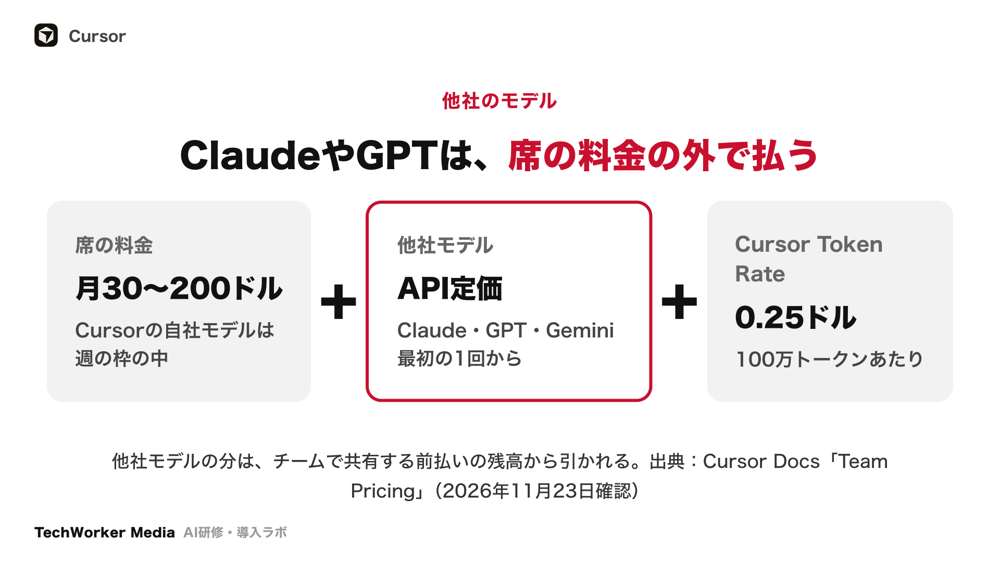
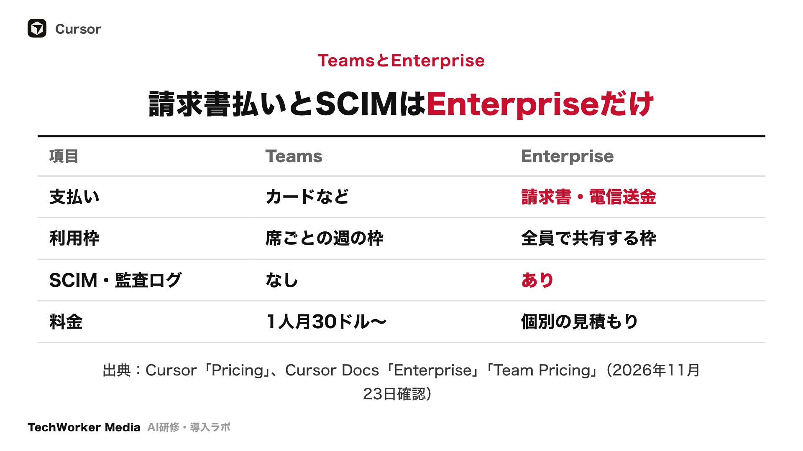
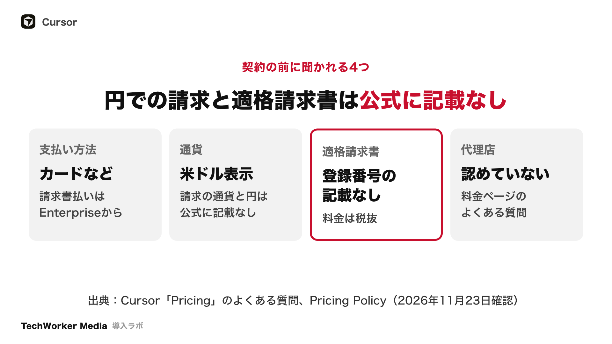

Cursorの法人向けの料金はThe X Subscriptionという新しい仕組みに変わりました。いま新しく契約する会社に関わる要点は次の3つです。
- 席の料金：Teamsは1人月30ドル・100ドル・200ドルの3段の席から選びます。料金は税抜です。
- 他社のモデル：ClaudeやGPTなどは席の料金に含まれず、API定価に100万トークンあたり0.25ドルを足して払います。
- 支払い：Teamsはカードなどのオンライン決済で、請求書払いと電信送金はEnterpriseからです。
公式の料金ページとドキュメント（2026年11月23日確認）をもとに、稟議の前に確かめる点を整理します。
Cursorの法人向けの料金はいくらですか？
Teamsは1人月30ドルからです。席はPremium（30ドル）、Super（100ドル）、Ultra（200ドル）の3段で、Enterpriseは個別の見積もりです。

CursorのドキュメントはTeamsの席を次のように説明しています。
原文“On The X Subscription, Teams is priced per seat, and each seat is Premium ($30/user/mo), Super ($100/user/mo), or Ultra ($200/user/mo), the same prices and weekly usage as the matching individual plans.”
日本語訳The X Subscriptionでは、Teamsは席ごとの料金です。各席はPremium（1人月30ドル）、Super（1人月100ドル）、Ultra（1人月200ドル）のいずれかで、料金と週の利用枠は同じ名前の個人向けプランと同じです。
円は1ドル155円で計算した目安です。為替は仮の値で、実際の額は決済の換算レートで変わります。
| 契約 | 1人あたりの月額（税抜） | 10人の12カ月分（税抜） | 週の利用枠 |
|---|---|---|---|
| Teams Premium | 30ドル＝4,650円 | 3,600ドル＝558,000円 | 基準 |
| Teams Super | 100ドル＝15,500円 | 12,000ドル＝1,860,000円 | Premiumの3.75倍 |
| Teams Ultra | 200ドル＝31,000円 | 24,000ドル＝3,720,000円 | Premiumの12.5倍 |
| Enterprise | 個別の見積もり | 個別の見積もり | 全員で共有する枠 |
出典：Cursor「Pricing」、Cursor Docs「Team Pricing」（2026年11月23日確認）。計算：月額（ドル）×155円×人数×12カ月。日本の消費税の扱いは、公式の資料に書かれていません
1つのチームで席の段を混ぜられます。たとえばPremiumを8人、Superを2人にすると、12カ月で5,280ドル（818,400円）です。料金0ドルのFreeの席も管理者とメンバーのどちらにも付けられます。Freeの席にはチームの利用枠がなく、本人の個人プランの枠などを使います。席の料金は使っている有料の席の数で決まり、月の途中で足した席は日割りで請求されます。
週の利用枠で使えるのは、Cursorの自社のモデル（Grok 4.7、Grok 4.6、Grok 4.5、Composer 2.5）です。枠は席ごとで、席どうしで分け合えません。Teamsの年払いの料金は11月23日の時点で公式の資料に書かれていません。
ClaudeやGPT、Geminiの法人契約と比べたい場合は、生成AIの法人契約の比較に主な4社をまとめています。人数を入れて契約の条件を比べる稟議パックも用意しました。
ClaudeやGPTを使うと料金はどう増えますか？
他社のモデルは席の料金に含まれません。最初の1回から、API定価と100万トークンあたり0.25ドルを、チームの前払いの残高から払います。

Cursorは他社のモデルの扱いを次のように書いています。
原文“Third-party models aren't included. They're billed at public list API prices plus the Cursor Token Rate, paid from the team's prepaid balance from the first request.”
日本語訳他社のモデルは含まれません。公開のAPI定価にCursor Token Rateを足した額で請求され、最初の要求から、チームの前払いの残高で支払います。
Cursor Token Rateは100万トークンあたり0.25ドルで、入力、出力、キャッシュのトークンにかかります。自社のAPIキーを持ち込む場合（BYOK）にもかかります。対象外は、Cursorの自社モデル（GrokとComposer）、Cost modeの要求、キャッシュの読み出しの単価がどの料金の段でも100万トークンあたり0.10ドルを下回るモデルの3つです。
計算の例です。1人が1か月に、Claude Sonnet 5.5で入力1,000万トークン、出力100万トークンを使ったとします。使う量は仮の値です。
| 項目 | 計算 | 額 |
|---|---|---|
| API定価（入力） | 1,000万トークン×100万あたり2ドル | 20ドル |
| API定価（出力） | 100万トークン×100万あたり10ドル | 10ドル |
| Cursor Token Rate | 1,100万トークン×100万あたり0.25ドル | 2.75ドル |
| 合計 | 席の料金とは別 | 32.75ドル＝5,076円 |
出典：Cursor Docs「Team Pricing」のモデルの料金表（Claude Sonnet 5.5は入力2ドル・出力10ドル、2026年11月23日確認）。使う量と1ドル155円は仮の値です
前払いの残高は、管理者が1回ごとに買い足すか、残高が減ったら自動で足す設定（Auto Top-up）で補います。チーム全体の月の上限と、1人ごとの上限も決められます。チームの上限に届くと、残高が残っていても、翌月か管理者が上限を上げるまで追加の利用は止まります。トークンの単位の考え方はトークンコストとはで説明しています。
TeamsとEnterpriseは何が違いますか？
請求書払い、全員で共有する利用枠、SCIM、監査ログ、優先サポートはEnterpriseだけです。シングルサインオンとプライバシーモードの強制は、Teamsにもあります。

| 項目 | Teams | Enterprise |
|---|---|---|
| 料金 | 1人月30・100・200ドル | 個別の見積もり |
| 利用枠 | 席ごとの週の枠 | 全員で共有する枠（pooled usage） |
| 支払い | カードなど（自社で申し込む） | 請求書・発注書、電信送金 |
| シングルサインオン（SAML） | あり（追加の費用なし） | あり |
| SCIM（アカウントの自動の追加と削除） | なし | あり（シングルサインオンが前提） |
| 監査ログ | なし | あり |
| プライバシーモード | 既定でオン。組織全体で強制できる | 既定でオン。組織全体で強制できる |
| サポート | 標準のサポート（フォーラムを含む） | 優先サポート（人の最初の返答は緊急8時間、通常24時間） |
出典：Cursor「Pricing」、Cursor Docs「Enterprise」「Team Pricing」「SCIM」、Cursor Help「Privacy」（2026年11月23日確認）
Cursorは自社で申し込んで運用できる会社にTeamsを、優先サポートや共有の利用枠、請求書払い、SCIMが要る会社にEnterpriseを勧めています。Enterpriseには、使えるモデルやMCPを管理者が絞る設定と、米国にデータを置く選択もあります。米国に置く場合、対象のモデルの料金が10％上がります。
The X Subscriptionより前に作ったTeamsは、旧い席（Standardが月40ドル、Premiumが月120ドル）のまま使い続けられます。新しい仕組みへの切り替えは任意で、ドキュメントには、切り替えると元に戻せないと書かれています。
支払い方法、日本円、適格請求書、代理店はどうなっていますか？
Teamsはカードなどのオンライン決済で、料金は米ドルで表示されています。円での請求、日本の適格請求書の登録番号、日本の消費税の扱いは、公式の資料に書かれていません。料金ページは購読を代理店経由では売らないと書いています。

料金ページのよくある質問は、支払い方法を次のように書いています。
原文“Self-serve plans support all major credit and debit cards. For invoice-based billing and wire transfers, please contact us to discuss the Enterprise plan.”
日本語訳自社で申し込むプランでは、主なクレジットカードとデビットカードが使えます。請求書払いと電信送金を希望する場合は、Enterpriseプランについてお問い合わせください。
| 聞かれること | 公式に書かれていること |
|---|---|
| 支払い方法 | Teamsは主なクレジットカードとデビットカードなど、申込みの画面に出る方法。請求書・発注書と電信送金はEnterpriseで、Anysphereの料金規程では、注文書に別の定めがなければ請求日から30日以内に払う |
| 通貨と日本円 | 料金は米ドルで表示。請求の通貨と円での請求の記載はない |
| 消費税と適格請求書 | 料金は税抜。Anysphereの料金規程は税を利用者の負担としているが、自社で申し込むTeamsに同じ条項が当てはまるかは未確認。日本の適格請求書の登録番号の記載はない |
| 代理店を通す必要 | 購読はX Subscription Corpが直接販売し、代理店や第三者の販売を認めていない。Enterpriseの販売経路の記載はない |
出典：Cursor「Pricing」のよくある質問、Cursor「Pricing Policy」（2026年8月21日更新）、いずれも2026年11月23日確認
料金ページは代理店について次のように答えています。
原文“No. Subscriptions are only sold directly through X Subscription Corp. We do not authorize any resellers or third-party sellers.”
日本語訳いいえ。購読はX Subscription Corpが直接販売するだけです。代理店や第三者の販売者は一切認めていません。
料金ページは購読の販売元をX Subscription Corpとしています。ドキュメントでは、TeamsとEnterpriseの規約は基本契約（MSA）とデータ処理契約（DPA）で、MSAの当事者はAnysphere, Inc.です。自社で申し込むTeamsの契約の相手がどちらになるかは、公式の資料で確かめられませんでした。日本円での請求や適格請求書が社内の決まりで必要な会社は、Enterpriseの営業窓口に、注文書の前に書面で確かめます。Claudeの同じ4つの答えはClaude Codeの法人契約に、GitHub Copilotの契約はGitHub Copilotの法人契約と料金にまとめています。
入力したコードは学習に使われますか？
プライバシーモードをオンにすれば、学習には使われません。保存されない範囲には例外があります。Teamsでは既定でオンで、管理者が全員に強制できます。
Cursorのデータの扱いのページは、プライバシーモードがオンのとき、顧客のデータをCursorの学習に使わないと書いています。ドキュメントは、ほとんどのモデルがデータを保存しない契約（ZDR）のもとで動くと説明しています。オフにすると、コードやプロンプトがモデルの学習に使われることがあります。
保存の例外は3つあります。不正利用の検知に引っかかった入力は、調べるために保存されることがあります。自社のAPIキーを使う場合（BYOK）は、ZDRの対象外です。一部のモデルは保存が必須で、Claude Fableがその例です。
Claude Fableのモデルは、Anthropicが有害な利用の確認のために入力と出力を保存します。学習には使われません。プライバシーモードを使うチームとEnterpriseでは、管理者が管理画面で承認するまで、Fableへの要求は失敗します。
CursorはSOC 2 Type IIの報告と、ISO/IEC 27001、ISO/IEC 42001、AIUC-1の認証を持っています。報告書はTrust Centerで請求できます。
Cursorは2026年11月13日に、委託先を経由した不正アクセスの調査結果を公表しました。公表の要点は次の3つです。
- 影響の範囲：プライバシーモードを使う利用者のプロンプトとコードは、影響を受けていないと書かれています。一方で、プライバシーモードを使っていない利用者の一部（0.05%未満）のエージェントの記録、サポートのデータとメールのやり取り、一部の顧客（0.01%未満）のAPIの認証情報は、外に出たと書かれています。
- 拡張機能：10月29日に、Cursorの拡張機能の配布元に、不正なClaude Codeの拡張機能が約11時間置かれました。受け取った可能性があるのは最大5,000人です。
- 対応：影響のあった顧客には個別に連絡したとしています。
拡張機能の版や確かめる手順は、Cursorのセキュリティの告知に載っています。審査の書類では、プライバシーモードを強制しているかを1行で書けるようにしておきます。ここはTechWorkerの提案です。
稟議では何を書けばよいですか？
席の段と人数、他社のモデルの月の上限、支払い方法、プライバシーモードの強制の4つを書きます。ここはTechWorkerの提案です。
- 席の段と人数：まずPremiumで始め、利用枠が足りない人だけSuperにします。12カ月分は表の計算式で出します。
- 他社のモデルの月の上限：チーム全体の月の上限と、1人ごとの上限を決めます。ClaudeやGPTを使う人数を先に決めておくと、上限の根拠になります。
- 支払い方法：カードなどのオンライン決済で払えるならTeams、請求書払いが必要ならEnterpriseの見積もりを取ります。
- プライバシーモード：組織全体で強制するかと、Claude Fableを承認するかを書きます。
開発の部署でAIを広げる進め方は、Claude Codeの社内展開の手順も参考になります。
よくある質問
Teamsは有料の席が1人以上あれば作れます。ドキュメントにそれ以上の最少人数の記載はありません。大人数の割引は、enterprise@cursor.comへの問い合わせと書かれています。
Enterpriseなら請求書・発注書と電信送金で払えます。Teamsは主なクレジットカードとデビットカードなど、申込みの画面に出る方法で払います。Anysphereの料金規程では、請求書の支払いの期限は、注文書に別の定めがなければ請求日から30日です。
表示の料金は税抜です。Anysphereの料金規程では、税は利用者の負担とされています。日本の消費税の扱いと適格請求書の登録番号は、公式の資料に書かれていません。
料金ページのよくある質問は、購読はX Subscription Corpが直接販売し、代理店や第三者の販売を認めていないと答えています。Enterpriseの販売経路は公式の資料に書かれていないため、営業窓口に確かめます。
必要ありません。旧いTeamsの席はそのまま使えます。新しい仕組みへの切り替えは任意で、切り替えると元に戻せないとドキュメントに書かれています。
次の一歩は何から始めればよいですか？
使う人数と、ClaudeやGPTを使う人を決めて、12カ月分の席の料金と、他社のモデルの上限を出すことから始めます。
- Cursorを使う人数と、席の段（Premium・Super・Ultra）を決めます。
- 他社のモデルを使う人と、チームの月の上限を決めます。
- カードなどのオンライン決済でよいかを経理に確かめ、だめならEnterpriseの見積もりを取ります。
TechWorkerでは、Claude Code、GitHub Copilot、Cursorなどの開発向けのAIの研修を、受講者の実際の業務1本から組みます。30日後に使った人の割合と1件の時間を測って報告します。検討段階のご相談だけでも歓迎です。
出典と確認範囲
確認日：2026年11月23日。料金は税抜の米ドルで、円は1ドル155円の仮の換算です。Teamsの年払いの料金、新しい料金の仕組みが始まった日、自社で申し込むTeamsの契約の相手、請求の通貨、円での請求、日本の消費税の扱い、適格請求書の登録番号、Enterpriseの販売経路と最少人数は、公式の資料で確かめられませんでした。TechWorkerの環境では、Cursorの法人契約の画面と請求を確かめていません。他社のモデルの使う量は仮の値です。稟議に書く4項目はTechWorkerの提案です。料金と条件は変わるため、契約の時点で公式情報を確認してください。
- Cursor「Pricing」
- Cursor Docs「Team Pricing」
- Cursor Docs「Enterprise」
- Cursor Docs「Models and pricing」
- Cursor Docs「Legacy Cursor plans」
- Cursor「Pricing Policy」（2026年8月21日更新）
- Cursor Help「Privacy」
- Cursor「Data Use」（2026年9月3日更新）
- Cursor Docs「Privacy and data governance」
- Cursor「Security」（2026年8月25日更新）
- Cursor「An update on our recent security incident」（2026年11月13日）